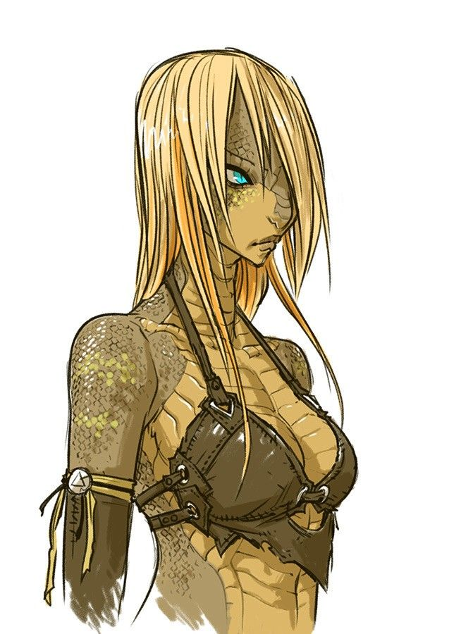
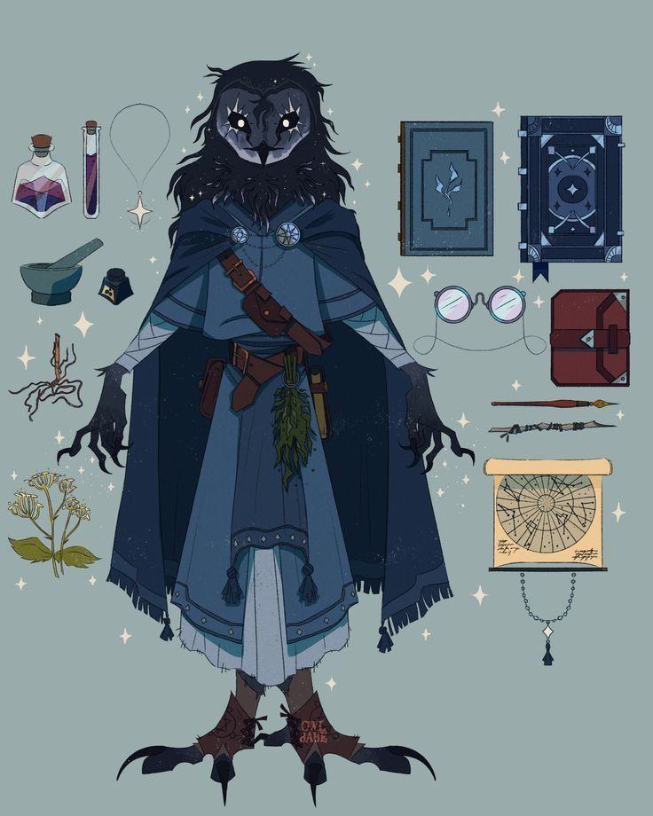
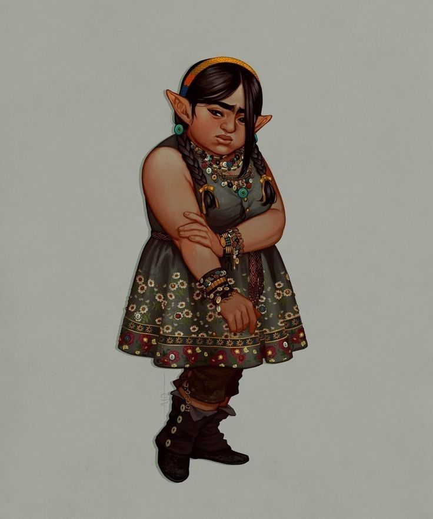
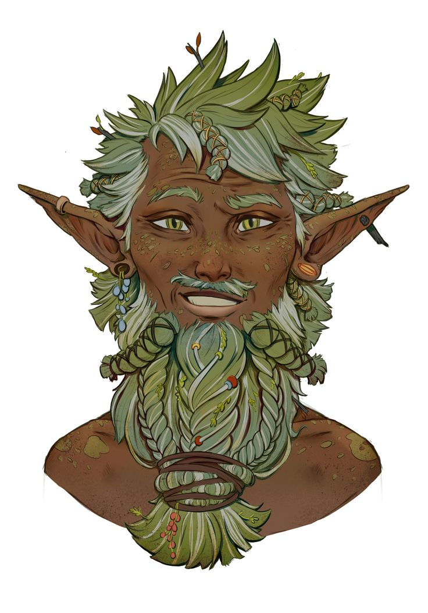
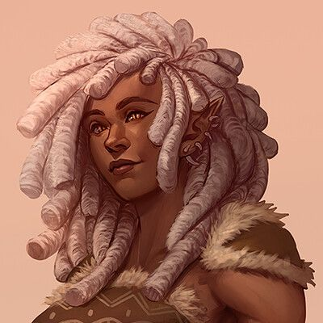
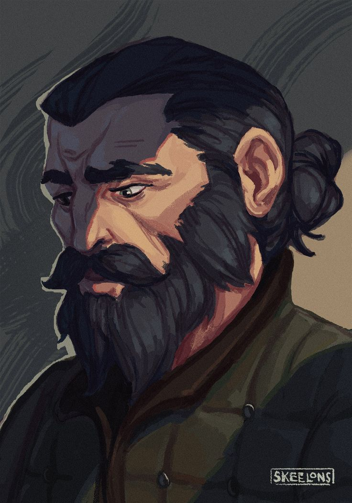
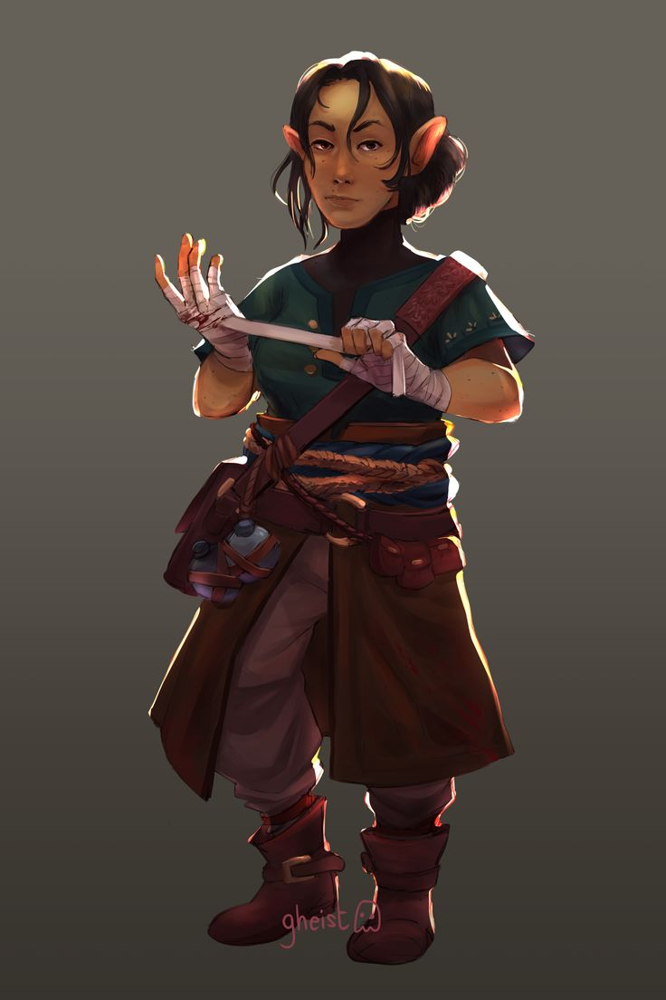

O grupo de recém contratados da Guilda de Resoluções e Comissões, receberam uma comissão para encontrar o cavalo, Barker, de Danipa Silver, abaixo estão os personagens que apareceram na primeira e segunda sessão.

✦ A Fada Soberba
Gionna
Uma fada borboleta que desejou ser humana por amor — e pagou com o próprio corpo o preço de um feitiço que deu errado. Hoje é apenas osso e memória.

✦ O Sátiro Corrompido
Escarnos
Um sátiro que começou roubando livros para proteger sua floresta e terminou corrompido pelo próprio poder que jurou usar em nome da justiça.

✦ A Bruxa
Helena Curaça
Uma bruxa, antes uma companheira de laboratorio aprisionada por seu parceiro, agora está livre do cativeiro.

✦ A Menina Pássaro
Tiana
Uma criança vítima de tráfico humano e cativeiro libertada pelo grupo de aventureiros e acolida pela antiga parceira do seu carcereiro.

✦ A Gnomo
Carnielle
Se sentindo reprimida, Cranielle encontrando Escarnos que a seduz para usa-lá como comida para seu animal de estimação, um basilisco chamado Alt.

✦ Dono da Guilda
Lomero Poesa
Dono da Guilda de Resoluções de Problemas e Comissões, Lomero é um homem bem humorado que viveu se aventurando sozinhos pelo Reino Polaris e quando se estabeleceu considerando sua prórpia família os membros da guilda.

✦ Fazendeira Amarga
Danipa Silver
Um recé viuva, Danipa e a dona da sua fazenda Leite de Prata, é apaixonada ppor cavalos sendo su favorito Baker.

✦ Dono de Casa
Bruno Urgein
Manco, Bruno deixou as aventuras que viva na juventude para se estabelecer em casa ao lado de sua esposa, Feliana. Um pai recluso e superprotetor com seu único flho, Albert. Ele realmente tenta dar algum juizo aquele garoto.

✦ Marceneira
Feliana Urgein/h2>
Ela saiu de Alifa a procura de calmaria, e por ter conhecido Bruno entre cartar de correio erradas. Tem uma execelente habilidade com a manuseio de madeira.